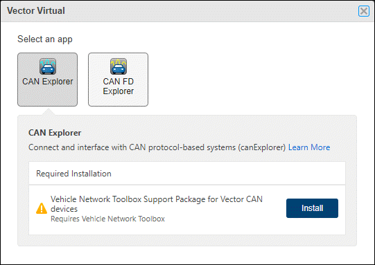
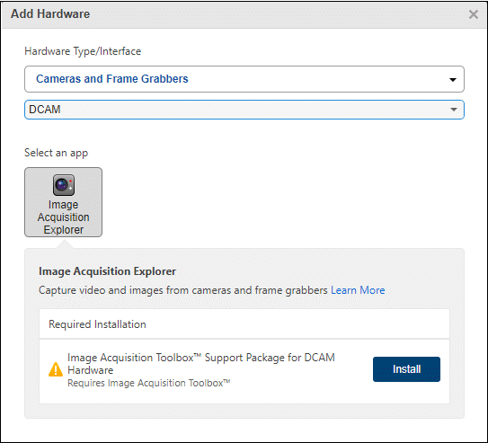

Get Started with Hardware Manager
Hardware Manager is a graphical interface that allows you to discover and connect to your hardware from MATLAB® by providing access to the necessary add-ons and apps.
Discover Hardware
When you open Hardware Manager, it displays all applicable hardware devices, channels, and protocols detected on your system. To access your hardware, follow these steps:
Open Hardware Manager, either by clicking it in the apps gallery, or by typing
hardwareManager
Hardware Manager displays all the applicable detected hardware connected to your system. Allow a moment for the list to be completed. When ready, Hardware Manager might look like this:

If you do not see your hardware listed in your display, see Add Hardware.
Click the device you want to use.
Hardware manager displays a list of apps that support your device. For example, if you select a serial port, the Serial Explorer app is available.

For this particular device, no add-ons are needed. So you can directly open the Serial Explorer app.
If the app you want to use with your device is available in an add-on that you do not have installed, Hardware Manager provides a link so you can install the necessary product or support package. For example, if you select a Vector Virtual 1 device and want to use the CAN Explorer app, this requires Vehicle Network Toolbox™ and an additional support package. If you have the toolbox installed, but not the support package, Hardware Manager indicates that installation is required:

Add Hardware
In some cases, Hardware Manager might not automatically detect or recognize your hardware. This can happen for devices that require add-ons to be installed before detection can occur. You can manually add and configure your device, following these steps.
Click Add Hardware.
Select a hardware type and interface/protocol for communicating with your hardware. Among the choices are Arduino®, Raspberry Pi®, CAN, TCP/IP, and so on.
Select a manufacturer. Whether you need to select a manufacturer and which ones you can choose depend on the hardware type you chose. Some of the supported vendors are NI™, Analog Devices®, Kvaser, and so on.
For your selections, Hardware Manager displays the apps that are applicable and indicates which MathWorks® products to install.
For example, suppose you want to connect MATLAB to a DCAM-compliant digital camera in Hardware Manager.
Click Add Hardware.
For Hardware type/interface, choose Cameras and Frame Grabbers.
For Select your hardware manufacturer, choose DCAM. This is not actually a manufacturer, but is an industry-standard class of camera.
Your Add Hardware dialog box might look like this:

In this example, the Image Acquisition Explorer app is provided in Image Acquisition Toolbox™. This toolbox is already installed, so Hardware Manager does not prompt you to do that. However, the chosen camera type of DCAM requires a support package which is not installed. At this point, you can click Install to get the required support package.